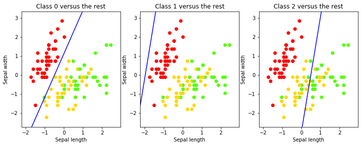

Chap1 介绍
任何机器学习问题可以描述为以下三个概念：
- 需要学习如何解决的任务为T。
- 为解决该任务所需要的经验为E。
- 度量解决任务执行效果的P。
线性分类
1
2
3
4
5
6
7
8
9
10
11
12
13
14
15
16
17
18
19
20
21
22
23
24
25
26
27
28
29
30
31
32
33
34
35
36
37
38
39
40
41
42
43
44
45
46
47
|
%matplotlib inline
import numpy as np
import matplotlib.pyplot as plt
from sklearn.cross_validation import train_test_split
from sklearn import preprocessing
from sklearn import datasets
from sklearn.linear_model import SGDClassifier
iris = datasets.load_iris()
X_iris, y_iris = iris.data, iris.target
#这里只取前两个特征
X, y = X_iris[:, :2],y_iris
#分割训练和测试数据集
X_train,X_test,y_train,y_test = train_test_split(X,y,
test_size=0.25,
random_state=33)
print(X_train.shape,y_train.shape)
#Standardize 数据归一化处理
scaler = preprocessing.StandardScaler().fit(X_train)
X_train = scaler.transform(X_train)
X_test = scaler.transform(X_test)
#绘制训练样本点图
colors = ['red','greenyellow','blue']
for i in xrange(len(colors)):
xs = X_train[:,0][y_train == i]
ys = X_train[:,1][y_train == i]
plt.scatter(xs,ys,c=colors[i])
plt.legend(iris.target_names)
plt.xlabel('Sepal length')
plt.ylabel('Sepal width')
#随机梯度下降分类器
clf = SGDClassifier()
clf.fit(X_train,y_train)
#系数，为3行，每类一个系数，每行两列，分别作为样本数据两列的系数
print(clf.coef_)
#y轴交点，也是3个，每类一个交点
print(clf.intercept_)
|
((112, 2), (112,))
[[-37.50635483 16.42537437]
[ -4.59180001 0.75101269]
[ 8.19869218 -1.35666809]]
[-18.63515639 -9.00188573 -4.08537094]
使用上面输出的数据可以在图上画出三条不同的直线，这三条直线用于分隔不同的分类。ceof_的第一行为第一条直线的系数，a1,a2，intercept_为第一条直线的b，b+a1x1+a2x2=0，这里x1和x2为两个特征列，对应于图上的横轴和纵轴。
1
2
3
4
5
6
7
8
9
10
11
12
13
14
15
16
17
18
19
20
21
22
|
#绘制这三条决策边界
#图样x,y轴边界
x_min,x_max = X_train[:,0].min() - .5 ,X_train[:,0].max() + 0.5
y_min,y_max = X_train[:,1].min() - .5 ,X_train[:,1].max() + 0.5
xs = np.arange(x_min,x_max,0.5)
fig,axes = plt.subplots(1,3)
fig.set_size_inches(12,8)
for i in [0,1,2]:
axes[i].set_aspect('equal')
axes[i].set_title('Class '+str(i)+' versus the rest')
axes[i].set_xlabel('Sepal length')
axes[i].set_ylabel('Sepal width')
axes[i].set_xlim(x_min, x_max)
axes[i].set_ylim(y_min,y_max)
fig.sca(axes[i])
plt.scatter(X_train[:,0],X_train[:,1],c=y_train,
cmap=plt.cm.prism)
ys = (-clf.intercept_[i] - xs * clf.coef_[i,0])/clf.coef_[i,1]
plt.plot(xs,ys,'b')
|

模型训练完毕。但是查看曲线只有第一类的分类效果比较好。现在使用数据进行测试：
1
|
print(clf.predict(scaler.transform([[4.7,3.1]])))
|
[0]
predict返回预测的分类结果列表（这里只有一个样本）。predict方法只返回三分类中的分类结果。在这里选择的是距离最远的边界。可以通过decision_function来检查：
1
|
print(clf.decision_function(scaler.transform([[4.7,3.1]])))
|
[[ 30.15506368 -3.14759504 -14.5397346 ]]
评估分类结果
精度(accuracy)：给定数据集给分类器，计算准确分类结果的占比。
1
2
3
|
from sklearn import metrics
y_train_pred = clf.predict(X_train)
metrics.accuracy_score(y_train,y_train_pred)
|
0.6696428571428571
像上面这样在训练集上进行精度测量是不合适的。因为是基于这些数据构建的模型，有可能对于这些数据模型己经被训练得非常适合了，但对于其它数据则效果不好。这种现象被称为过拟合(overfitting)。如果在训练集上进行检测，你将检测不到过拟合。因此，不要在训练集上进行检测。
应该使用之前保留的测试数据集进行检测：
1
2
|
y_pred = clf.predict(X_test)
metrics.accuracy_score(y_test,y_pred)
|
0.71052631578947367
通常在测试集上的精度会低于训练集上的精度，因为模型是在训练集上训练的。我们的目标是在训练集上避免过拟合，以保证模型的泛化(generalization)能力。
精度检测在各分类样本数量差别不大，即样本是均匀分布(uniform distribution)时是一个较好的度量方法。但是如果样本是偏态分布(skewed distribution)时，分类器在对样本中的主分类数据进行检测时将得到一个极高精度，这是一种非常幼稚的方法。
sklearn中包含了多种评估函数；三个最流行的是：precision、recall,F1-score(f-measure)。将预测值用正负例P、N表示，实际值用T、F表示，它们的计算公式为：
accuracy = (TP + TN) / mprecision = TP / (TP + FP)recall = TP / (TP + FN)f1score = 2 * precision * recall/(precision + recall)
1
|
print(metrics.classification_report(y_test,y_pred,target_names=iris.target_names))
|
precision recall f1-score support
setosa 1.00 1.00 1.00 8
versicolor 0.00 0.00 0.00 11
virginica 0.63 1.00 0.78 19
avg / total 0.53 0.71 0.60 38
从上面的结果可以看出：
-
setosa这一分类的precision和recall都是1.0。precision 1.0表示所有被分类器分类为setosa的样例都是真正属于setosa分类的。recall 1.0表示所有setosa的样例都被标记为了setosa（全都被找了出来）。
-
对于versicolor这一分类，结果则不太好：precision只有43%，即被分类器标识为versicolor的样例中只有43%是真正属于versicolor类的。recall为27%，在所有versicolor样本中只有27%的样本被正确的分类了。
另一个分类结果评估工具是混淆矩阵（特别是于多分类问题），好的分类器的混淆矩阵应该是一个对角矩阵。上面的分类器的混淆矩阵如下：
1
|
print metrics.confusion_matrix(y_test,y_pred)
|
[[ 8 0 0]
[ 0 0 11]
[ 0 0 19]]
上面模型的评估效果在setosa上比较准确，而对于另外两类则不完全准确。一个原因是因为我们对训练集和测试集的划分，划分的方式（通常是随机的）会影响测试的结果。
交叉验证法可以降低由于测试/训练集划分带来的的影响，得到更好的效果。k拆交叉验证法的步骤如下：
- 将数据集划分为k个不同的子集
- 在k-1个子集上创建k个不同的模型，并使用剩下的1个子集上进行测试
- 测试在k个模型上的性能，取平均值
1
2
3
4
5
6
7
8
9
10
11
12
13
14
15
16
17
18
19
20
21
22
23
24
25
|
from sklearn.cross_validation import cross_val_score, KFold
from sklearn.pipeline import Pipeline
from sklearn.preprocessing import StandardScaler
#创建标准化和线性模型的pipeline
clf = Pipeline([
('scaler',StandardScaler()),
('linear_model',SGDClassifier())])
#k拆交叉验证
cv = KFold(X.shape[0], 5, shuffle=True, random_state=33)
scores = cross_val_score(clf,X,y,cv=cv)
print scores
#scores = cross_val_score(clf,X,y,cv=6)
#print scores
from scipy.stats import sem
def mean_score(scores):
return ("Mean score: {0:.3f} (+/- {1:.3f})").format(np.mean(scores),sem(scores))
print mean_score(scores)
#模型平均精度为0.747
|
[ 0.7 0.7 0.8 0.83333333 0.7 ]
Mean score: 0.747 (+/- 0.029)
机器学习分类
机器学习相关的重要概念